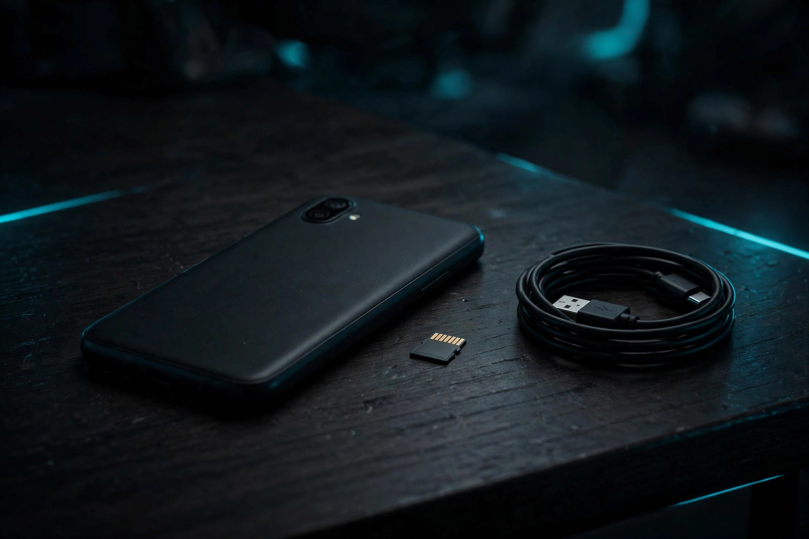

128GB vs. 256GB on a budget phone: the total-cost math most guides skip

"Storage full" is the message that ends more budget phones than any cracked screen. The phone still works; it just cannot take a photo, install an update, or download an app until something is deleted. Choosing between 128GB and 256GB at purchase is really choosing between three different ways of paying for room: pay the manufacturer once for a bigger tier, pay once for a memory card, or pay a cloud provider every month or year for as long as the phone is kept. Those routes have very different three-year costs, and the cheapest one depends on a number most buyers never look up — how much storage the phone in their pocket is already using.
Why 128GB feels smaller than it sounds
The capacity on the box is not the capacity available. The operating system, pre-installed apps, and system data occupy part of every tier before the first photo is taken, and app caches grow quietly in the background. That is why buying advice for cheap Android phones has hardened in recent years: Engadget's guidance is that if a phone has no expandable storage, 128GB is the minimum worth considering and 256GB is the peace-of-mind choice — otherwise the owner ends up facing the "phone full" message and is forced to clear the device or sign up for cloud storage. The storage guides that break usage down by habit land in a similar place: 128GB can still be sufficient for lighter users who take a modest number of photos and videos, keep few large games installed, stream most music and video, and regularly back up older files, while 256GB suits people who record video, keep several years of photos on the device, and plan to keep the phone for three or more years.
Notice what both framings share: the right answer is a property of the user's habits and ownership window, not of the phone. A tier that is generous for a two-year, streaming-first owner is tight for a four-year, video-heavy one. That is why the first step is an audit, not a purchase.
Step 1: Audit the phone already in your pocket
Google's own Android help pages document the procedure. It takes about two minutes, and it converts a guess into a number:
- Open Settings and tap Storage. The phone shows total usage and a breakdown by category.
- Tap each large category — usually apps, photos, and videos — and note the top three consumers by size. Games and messaging apps with years of media are the usual surprises.
- Write down two numbers: total gigabytes used today, and the phone's age in years. Dividing the first by the second gives a rough annual growth rate.
- Project across the next phone's life. Multiply the annual rate by the years the new phone will realistically be kept — three is a fair planning figure in this segment — and add the current total. That projected figure, not today's, is what the new tier has to hold.
- Note what is backed up. Google documents that backed-up photos and videos can be removed from the device to recover local storage, and that its Smart Storage feature does this automatically when storage is nearly full. Photos that live safely in the cloud should count once, not twice, in the projection.
Success looks like this: a written projection with a margin. If the projection lands under roughly 90GB, a 128GB tier carries it with headroom. Between roughly 90GB and 110GB, the decision turns on whether the phone has a card slot. Above that, buy the room up front, one way or another — the rest of this guide prices the options.
The three ways to get more room, priced in Canada
Route 1 — the storage step-up. Manufacturers price the jump from 128GB to 256GB as a single upfront premium, and it is steepest on phones with no other expansion path. Google's Pixel 9a illustrates the shape of the cost even though it sits above this site's segment: its Canadian listings price the 128GB model at CA$679 and the 256GB model at CA$809, a CA$130 premium for the extra 128GB, on a phone whose spec listings show no card slot at all. Google Store Canada itself markets the 256GB version as the way to "keep even more music, movies, photos, files and games." The premium buys speed and simplicity: internal storage is the fastest room a phone has, and everything lives in one place.
Route 2 — the microSD card. Where a slot exists, expansion is a one-time purchase at commodity prices. Best Buy Canada listed a SanDisk Ultra PLUS 256GB microSDXC card at $79.95 CAD when checked on October 17, 2026. The budget phones themselves support it generously: Best Buy Canada lists the Galaxy A17 5G's storage as expandable, and Digital Trends' spec table for the Moto G (2025) lists its 64GB and 128GB models as expandable up to 1TB by microSD. The limits are real but narrow: cards are ideal for photos, video, and downloaded media, while apps themselves belong on internal storage. For a photo-and-video problem — the most common kind — a card solves it for less than the step-up premium on most lineups.
Route 3 — cloud storage. Google One's Canadian tiers, as listed when checked on October 17, 2026, price 100GB at CA$25.99 per year and 200GB at CA$3.99 per month, on top of the 15GB every Google account includes free. Cloud storage does something neither other route does: it backs the files up, so a lost phone is an inconvenience rather than a lost photo library. But it rents room rather than selling it, it needs a connection to reach anything not cached on the device, and the bill repeats for as long as the subscription is needed to keep the library accessible.
The 3-year total-cost comparison
Putting the three routes on the same three-year clock, using the prices checked on October 17, 2026:
| Route | What it costs | 3-year total | What it does not solve |
|---|---|---|---|
| 256GB step-up (Pixel 9a listings, as the no-card-slot example) | CA$130 one-time premium over 128GB | CA$130 | Nothing to transfer at upgrade; premium is paid again on the next phone |
| 256GB microSD card (SanDisk Ultra PLUS, Best Buy Canada) | $79.95 CAD one-time | $79.95 CAD | Apps still live on internal storage; card can move to the next phone if it has a slot |
| Google One 100GB (Canada, as listed) | CA$25.99 per year | CA$77.97 | Room is rented, not owned; originals need a connection unless cached |
| Google One 200GB (Canada, as listed) | CA$3.99 per month | CA$143.64 | Same rental caveat; costs more than the card and the step-up over 3 years |
| Galaxy A17 5G 128GB + 256GB microSD (a complete sub-$300 example) | $219.99 CAD phone (SAVE $50 listing) + $79.95 CAD card | $299.94 CAD total, one-time | Second-slot and hybrid-tray details vary by variant; check the listing |
The pattern the table exposes is the one spec-sheet comparisons miss. Over three years, the 200GB cloud tier costs more than a 256GB memory card and more than the Pixel's storage step-up — while providing backup the other two do not. The 100GB cloud tier roughly matches the card's three-year cost and also provides backup, which makes it the sensible cloud choice for a photo library that fits it. And on a phone with a card slot, the complete package — a 128GB Galaxy A17 5G plus a 256GB card — still lands under $300 CAD in total at the checked prices, with the card reusable in a future phone. None of these routes is universally cheapest; each is cheapest for a different problem.
When 256GB built-in is genuinely worth it
Three profiles should skip the arithmetic and buy the tier. First, owners of phones with no card slot who shoot video regularly: with no expansion path, the step-up premium is the only one-time fix, and Engadget's peace-of-mind framing applies in full. Second, gamers: large games live on internal storage regardless of any card, so a library of them consumes the tier itself. Third, anyone projecting past roughly 110GB on the audit who plans to keep the phone three or more years — the guides' own threshold for the 256GB recommendation. Everyone else is usually better served by the audit's answer than by the larger number on the box.
The decision in one page
Storage decision checklist
- Projected 3-year usage under ~90GB: buy 128GB and stop thinking about it.
- Projection of ~90–110GB and the phone has a microSD slot: buy 128GB plus a card (~$79.95 CAD for 256GB, checked Oct 17, 2026).
- Projection over ~110GB, heavy video, or large games: buy 256GB built-in if the premium is reasonable.
- Photos matter more than room: add the 100GB cloud tier (CA$25.99/year as listed) for backup, whichever tier is chosen.
- No card slot and a tight projection: the step-up is not a luxury, it is the only expansion that exists.
Frequently asked questions
Is 128GB enough in 2026?
For lighter users, yes — the storage guides are consistent that 128GB remains sufficient for modest photo and video habits, streamed media, and regular backups. It stops being enough when video, games, or a multi-year photo library push projected usage past the tier's usable headroom, which the audit in this guide measures directly.
Does a microSD card make a phone slower?
For photos, video, and media playback, a modern card is not the bottleneck in daily use. Apps are the exception: they belong on internal storage, which is why a card complements a 128GB tier rather than replacing internal room entirely.
Is cloud storage a substitute for a bigger phone?
Partly. It offloads photos and files and adds backup, at a repeating cost — CA$77.97 over three years at the listed 100GB annual price. It does not give apps more room, and anything not cached needs a connection. Treat it as backup plus overflow, not as a bigger hard drive.
Our take: The 128GB vs. 256GB question has no universal answer, but it has a universal method: audit the current phone, project three years, then price the three routes. At Canadian prices checked October 17, 2026, a microSD card is the cheapest one-time fix where a slot exists, the 100GB cloud tier matches it over three years while adding backup, and the built-in step-up is worth its premium mainly on phones with no slot or for genuinely heavy users. Buy the room the projection calls for — no more, no less.